- Armatex
- Złączki skręcane
- Nakrętka zaciskowa K778A
Pegler Yorkshire · Kuterlite K700
Nakrętka zaciskowa Kuterlite K778A
Nakrętka zaciskowa z linii Kuterlite K700: 4 rozmiary (20mm – 63mm). Zastosowanie: rury PE, także przejścia PE × miedź.
- Rozmiary
- 4
- Połączenie
- zaciskowe do rur PE
- Producent
- Pegler Yorkshire
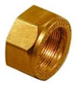
Rozmiary i numery artykułów
Źródło: cennik Kuterlite, październik 2024| Rozmiar | Nr artykułu | Opak. 1 | Opak. 2 | Ilość do zapytania |
|---|---|---|---|---|
| 20mm | 22352 | 1 szt. | 50 szt. | |
| 25mm | 22353 | 1 szt. | 50 szt. | |
| 32mm | 22354 | 1 szt. | 25 szt. | |
| 63mm | 22357 | 1 szt. | 10 szt. |
- Linia
- Kuterlite K700
- Zastosowanie
- rury PE, także przejścia PE × miedź
- Nazwa w cenniku
- compression nut
Zapytaj o wycenę: Nakrętka zaciskowa K778A.
Dodaj rozmiary do listy przyciskiem „Dodaj” albo od razu napisz do nas. Ceny hurtowe, dostępność i terminy przygotujemy w ciągu jednego dnia roboczego.
Inne produkty w linii
Wszystkie linie systemu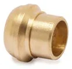
Adapter PE × miedź do lutowaniaK701 · 2 rozm.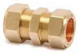
Złączka prosta PE × PEK710 · 5 rozm.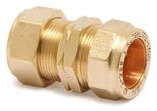
Adapter PE metryczny × calowyK710IM · 3 rozm.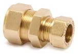
Złączka prosta PE × miedźK710KP · 3 rozm.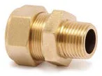
Złączka z GZ (gwint stożkowy) PEK711 · 3 rozm.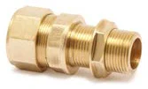
Złączka długa z GZ (gwint walcowy) PEK711LB · 1 rozm.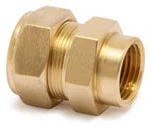
Złączka z GW PEK712 · 3 rozm.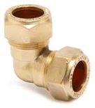
Kolano PEK715 · 3 rozm.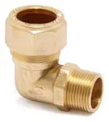
Kolano z GZ (gwint stożkowy) PEK716 · 3 rozm.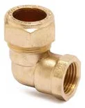
Kolano z GW PEK717 · 3 rozm.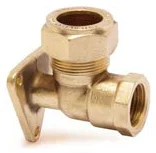
Kolano ścienne z GW PEK717W · 2 rozm.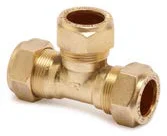
Trójnik równoprzelotowy PEK718 · 3 rozm.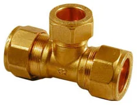
Trójnik z redukcją odejścia PEK718B · 2 rozm.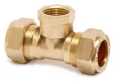
Trójnik z odejściem GW PEK730 · 4 rozm.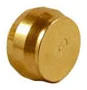
Korek zaślepiającyK742 · 1 rozm.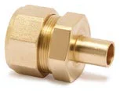
Adapter PE z końcówką wtykowąK743 · 1 rozm.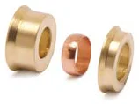
Zestaw redukcyjnyK748R · 3 rozm.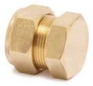
Zaślepka PEK751 · 2 rozm.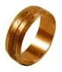
Pierścień zaciskowyK778B · 4 rozm.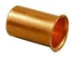
Tulejka wzmacniającaK766M · 5 rozm. Korek zaślepiającyK972 · 4 rozm.
Korek zaślepiającyK972 · 4 rozm.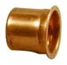
Tulejka wzmacniającaK1766C · 3 rozm.